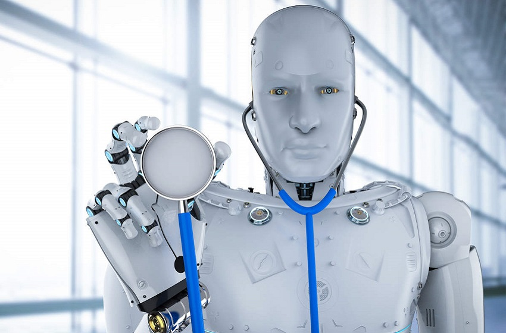

Influência da Tecnologia Na Saúde
Os avanços na saúde e na tecnologia estão diretamente ligados durante a história, desde a invenção da vacina, do raio-x, até os atuais robôs cirúrgicos. Cada uma dessas invenções foi responsável por aumentar a expectativa e a qualidade de vida da população, sendo que, entre 1940 e 2019, período correspondente a uma crescente tecnológica, o IBGE registrou um aumento médio de 31,1 anos na expectativa de vida.
As novas Tecnologias
A IoT é o foco de desenvolvimento de vários setores da indústria, estando presente em diversas aplicações, e é claro que ela não ficou de fora do setor da saúde! A adoção da IoT na medicina possibilitou o monitoramento remoto de diversos pacientes, sendo possível obter os dados de diversos sensores em um paciente pelos mais diversos aparelhos conectados, por exemplo, poderíamos monitorar a glicose e a pressão sanguínea de um paciente que está em casa e fazer uma análise dos dados fornecidos.
Outra aposta da área da saúde foi o investimento na robótica, desenvolvendo a cirurgia robótica. O procedimento é realizado com o auxílio de braços robóticos que possuem instrumentos médicos e fornecem uma visão 3D para o operador da máquina, além de possuírem diversas vantagens, como uma recuperação mais rápida, um procedimento menos invasivo e uma menor chance de infecção. Atualmente as cirurgias são realizadas com o auxílio de um médico especializado, mas com o avanço do 5G as operações remotas são possíveis.
Atualmente as cirurgias são realizadas com o auxílio de um médico especializado,
Cirurgia robótica versus laparoscópica
A cirurgia assistida por robôs não foi o primeiro procedimento minimamente invasivo que surgiu na Medicina. Tudo começou com as operações laparoscópicas, que exigem apenas pequenas incisões na barriga do paciente. Tanto é que a palavra vem do grego laparos, que significa abdômen. Nesta técnica, o cirurgião utiliza instrumentos com uma haste reta e uma câmera para fazer o procedimento. Assim, é possível mexer para cima ou para baixo, fazendo essa manipulação à beira do leito.
Na cirurgia robótica, é parecido. Tudo começa com as pequenas incisões. A diferença está na plataforma robótica, que mantém os instrumentos ao lado do leito, não o cirurgião. O profissional está sentado em um console, de onde comanda o robô que, por sua vez, transmite os movimentos às pinças.
Além disso, os instrumentos podem se mexer em todas as direções. Com isso, há mais liberdade para operar e uma precisão maior nos procedimentos mais complexo. Outra característica é a visualização tridimensional (3D) da câmera, que oferece uma visão e percepção de espaço melhores ao médico.
O processo de realização de uma cirurgia robótica é mais preciso devido a todos os equipamentos e instrumentos disponíveis. A câmera 3D garante uma visão com maior profundidade e definição. Ao mesmo tempo, o joystick (console) permite um controle exato dos movimentos a serem realizados.
Por sua vez, os braços do robô trazem estabilidade às mãos do profissional. Com isso, possíveis tremores deixam de impactar o trabalho executado.